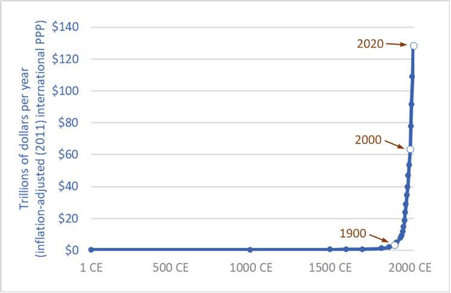

Out to Sea
Originally published at https://singularityhacker.com/7-power-laws-of-the-technological-singularity
When people talk about the technological singularity they usually do so exclusively in the context of Moore’s Law. But there are several Moore’s Law-like laws at work in the world and each of them is equally baffling. I’m referring to this list of trends as “power laws” because of the nature of their incredible rate of growth and because they independently work as pistons driving the engine of the singularity. A few things to note about these power laws. Firstly they are just observations. There are no, known, deeper physical principles in the universe that would lead us to believe that they must hold true. Secondly, we’ve observed these trends long enough to warren their recognition as power laws and there is no evidence or signs of their stagnating. We’ll start with the most famous and well-known power law and work our way through the others.
1. Moore’s Law
Moore’s Law states that transistors on a chip double about every two years and that the cost of that doubling halves. This is a double-edged sword. It means that the next model computer will be way faster than the previous but it also means that the value of your existing computer is dropping rapidly. The end of Moore’s Law has been proclaimed for a long time but there seems to be no end to its progression.
As we reach the physical limits of transistor sizes, entirely new hardware architectures are developed that sustain the progression. Things like 3D chips, specialized chips, and non-silicon based chips like photonics, spintronics, and neuromorphic chips are being developed and will ensure that this law continues.
“Regular boosts to computing performance that used to come from Moore’s Law will continue, and will instead stem from changes to how chips are designed.” — Mike Muller, CTO at ARM
What this does not mean is that a user’s experience of computer speed will increase. We tend to be more sloppy with application development when it’s cheap to make up for it with hardware horsepower. There is a standing joke that the same amount of computing resources that were used to send astronauts to the moon in the ’60s is now accidentally used by a sluggish browser tab.
2. Kryder’s Law
The second law driving our propulsion into the technological singularity is Kryder’s Law. It states, loosely, that digital storage doubles every year. It specifically has to do with magnetic storage but the principle is applicable to all digital storage as you will see. While you may not see this law exactly played out in the price of external drives in your local Best Buy, you can see it if you consider the price of cloud storage services.
Let’s look at the current top cloud storage providers. Apple offers two terabytes of cloud storage for about $10 a month. Google offers the same space for the same price as well as 10 terabytes for about $100 a month. After that, users can get 20 terabytes for $200 a month, 30 terabytes for $300 a month, and so on. Dropbox offers yet a similar package but with extras like full-text search for $20 a month. Lastly and most competitive is Amazon offering an incredible $0.004 per gigabyte per month through its Glacier storage service. When you take these cloud providers into account and consider that they will only grow via economies of scale, you see that Kryder’s law is in full effect.
Note that this also doesn’t even take into consideration innovations like Filecoin that actually distribute Kryder’s Law by allowing anyone with storage capacity to rent that space out. You could look at it like Uber or Airbnb for digital storage. This highlights the idea that this digital power law, like the others, should not be strictly tied to a hardware implementation. Similar to how Moore’s Law continues but not strictly through cramming more transistors on a chip but through new engineering architectures. The same principle applies.
3. Nielsen’s Law
Thirdly, we have Nielsen’s Law. If the previous laws could be summarized as computation and storage, this one is summarized as throughput. It states that bandwidth grows by 50% a year. More precisely, it states that the bandwidth of high-end users grows by 50% a year. That’s just 10% less annual growth than Moore’s Law.
In practice, we don’t see this linear growth and there are three reasons for it. One, Telecom companies are conservative. It cost billions of dollars to update their sprawling hardware. Two. The immediate impact of the end-user is not a guaranteed faster experience if they do upgrade their infrastructure. You can have the fastest hardware in the world on your street but that doesn’t automatically make the rest of the countries hardware faster. That slow loading web page may only be imperceptible faster after your area’s hardware is upgraded. Lastly, as new people get online, it’s more likely they are using older slower devices so the average expected speed is kept pressed down by these newcomers.
Since 1G was introduced in the 1980s, new wireless technology has been released every ten years. The advent of 1G introduced mobile telephony. Than 2G in the ’90s brought about global roaming and SMS. The 200’s saw 3G and smartphones with data. 2010 introduced 4G and mobile broadband. The year 2020 will be the year of 5G and the realization of the fully ubiquitous cloud. To put this in perspective, let’s say you wanted to download the newest episode of your favorite television show. At 800MB it would have taken 8 hours hrs to download in 1998, 5 hrs in 2001, 45 minutes in 2009, and 1 second with the new wireless protocol.
The impact and roll out of 5G will be enormous. With current networks, it takes about 100 milliseconds for information to travel across a network. With 5G, that latency will be reduced to 1 millisecond. We are talking about downloading full-length 5k movies in less than a second, surgeons controlling surgical robots in real-time from across the country, smart cities, and smart car-to-car communications.
4. Koomey’s Law
Koomey’s law has to do with the efficient use of energy and states that the number of computations per joule of energy dissipated has been doubling approximately every 1.57 years. This trend has been stable since the 1950s and has been faster than Moore’s law. Jonathan Koomey reframed the trend as follows: “at a fixed computing load, the amount of battery you need will fall by a factor of two every year and a half”. You can see the effect of this law in today’s newest generation CPU’s (Apple’s M1 chip) that are pumping out incredible amounts of processing power at significantly reduced levels of energy consumption.
5. Metcalfe’s Law
This power law with its closely associated cousin, the network effect, asserts that the value of a network is proportional to how many users are a part of it and that the addition of a new member adds value to all the existing members. A good example of this power law at work are social media sites like Facebook and YouTube. These sites had no revenue model in the beginning and were very expensive to run but grew to have so many users that the value grew directly from the value of the size of the network itself. Not too many years ago, software products had to packaged on physical media and shipped through the mail to users. Now, the same products can be built and deployed to one of any number of app stores and have a global audience with little to no overhead.
6. Hendy’s Law
Next, consider Hendy’s Law. Hendy’s Law states that the number of pixels per dollar in a digital camera doubles every two years. We can generalize this trend to encompass the idea that our ability to capture images and video of the world is exponentially improving year over year. This improvement opens the door to such high-fidelity VR and lifelogging that our human senses begin to find synthetic media and real-life indistinguishable. This already exists in the form of gigapixel photography where images are used instead of real specimens in biological study where we can’t tell the difference even under a microscope. Imagine being able to photograph a group of people and then zoom in so close later that you can identify properties of their cellular biology.
7. Bell’s Law
Last on our list is Bell’s Law. It says a new class of smaller, cheaper computers comes along about every decade. With each new class, the volume shrinks by two orders of magnitude, and the number of systems per person increases. The law has held from 1960s’ mainframes through the ‘80s’ personal computers, the ‘90s’ notebooks, and the new millennium’s smart phones. This is likely manifesting in the realm of wearable right now with the wild success of smart watched and wireless intelligent earbuds.
To wrap this up and summarize, while there may be temporary or geographically isolated stalls in the progression of these laws, they are still holding steady. You might compare them to walking up a set of stairs. At various points in your travel up the stairs, you rise up very high and then drop low. You do not move at a constant linearly increasing height. You go up and down but the trend is a clear move upwards. Through that up and down, you are converging on a net increase. The same is true of these digital laws. The overarching result is that software is eating the world and eating itself, recursively accelerating the process even further. One doesn’t need to theorize about potential advances in machine intelligence to see that we are accelerating into an unimaginable future. A clear technological singularity.
If none of the above convinces I will leave you with this chart illustrating the grown of the global economy. Assuming the continuation of these power laws, where are we 50–100 years from now?
